copy(P) =
if atomic(P) or P == None
return P
if not forwarded(P)
n = size(P)
P' = free
free = free + n
temp = P[0]
forwading_address(P) = P'
P'[0] = copy(temp) # !!! recursive !!!
for i = 1 to n-1
P'[i] = copy(P[i]) # !!! recursive !!!
再帰的なアルゴリズムを辞めたい => Cheney's copying collector
nodeの状態を3つの色で表現する
Garbage collection cycleが終わったとき: 全てのnodeがblack or white
=> white nodeがgarbageとして扱われる
1.
2.
3.
4.
Copying algorithmの特徴:
Copying methodが得意な場面・不得意な場面
同様に、large objectも専用の領域にallocateする
「objectを複数の領域で管理する」アイデア => generational garbage collectionのアイデアに通じる(ch. 7)
heapを複数に分けると、他にもメリットがある
=> 無駄な空間(semi-space)を小さくしつつ、compactingを可能になる
Garbage collectionを効率的に行いたい
(非効率的 \(\equiv\) 回収されるcell数に対し、処理時間が長い)